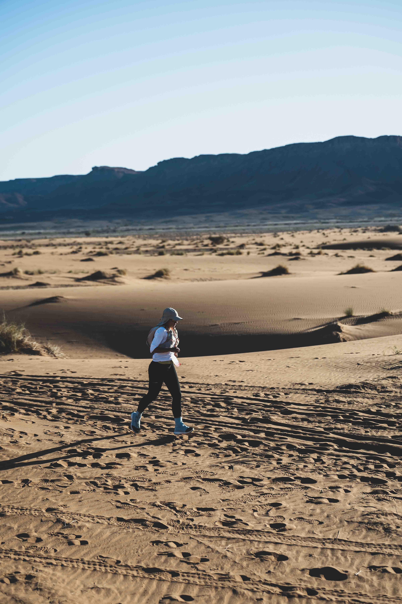
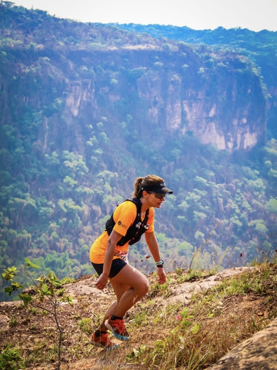
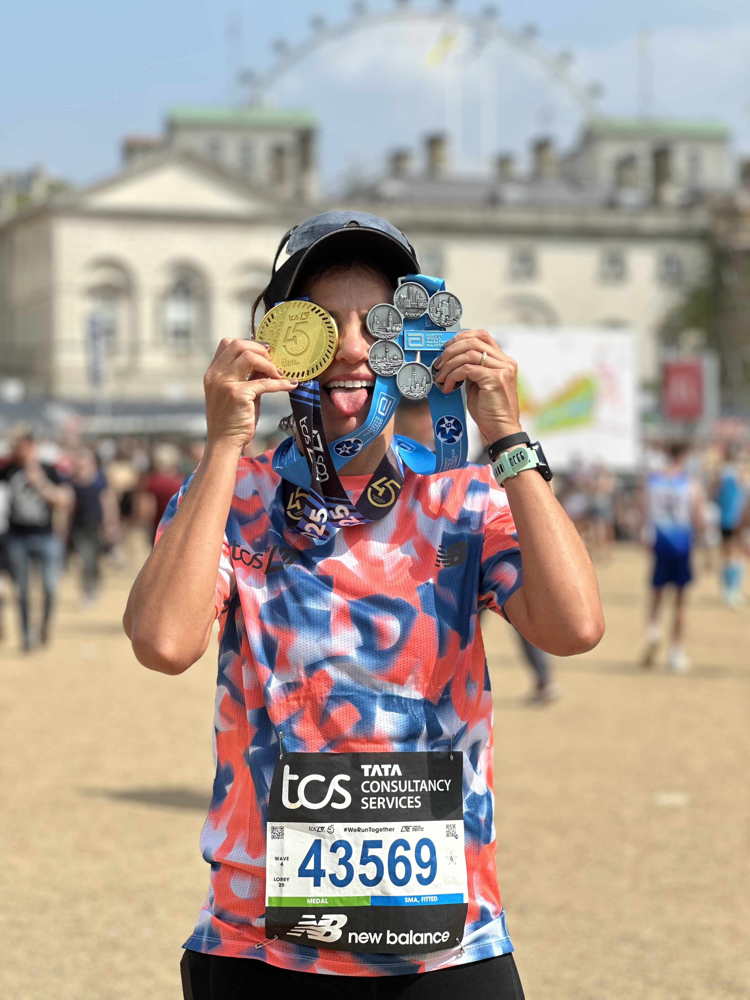

Esse é um espaço de experiências vividas por meio da corrida, registradas em capítulos, como num livro: provas, histórias e sentimentos que merecem permanecer.
O sentido, a presença, o caminho e o coração.
Praia, montanha, deserto ou cidade. Cada terreno muda a paisagem, o desafio e a história fica guardada no coração.



Em breve, cada corrida terá seu próprio capítulo: local, data, distância, fotos e o relato do que ficou pelo caminho.